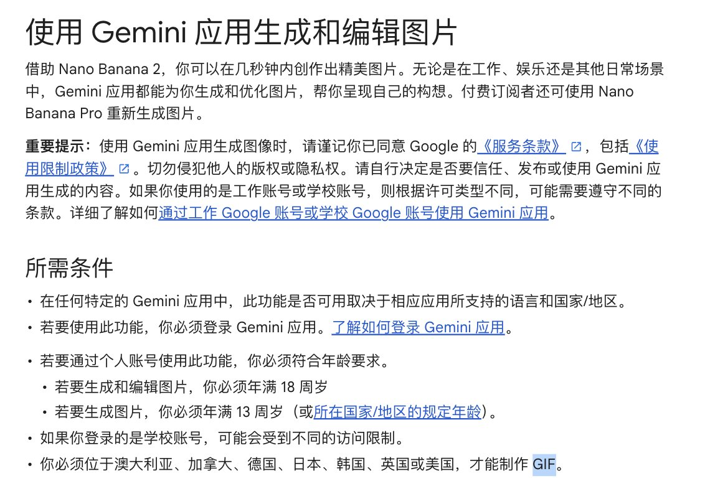

新闻 · 2026-11-21 18:00
谷歌为 Gemini 上线 GIF 动态图片生成功能，由 Omni 1.2 Flash 模型驱动
据IT之家报道，谷歌宣布为Gemini上线GIF生成功能，由视频模型Gemini Omni 1.2 Flash驱动，可生成循环动态图效和搞笑表情包。该功能面向所有Google AI订阅用户开放，并在美国、日本、韩国、澳大利亚、加拿大、英国、德国和法国免费；用户可在主聊天输入提示词，或在图像与视频工具中选择GIF并描述需求。

来源与核验
单一信源报道，未交叉核实